《追色手记29》学习资料
大林直行静谧胶片风：视频拆解与 Lightroom 实操复盘
视频标题 | 【追色手记29】调色教程来了！大林直行静谧胶片风，高级的美！ |
作者 | 摄影师聿铭 |
时长 | 约 11 分 20 秒 |
来源 | https://www.bilibili.com/video/BV17y411i7Ve/ |
整理日期 | 2026-05-24 |
说明本文根据视频音频转写、画面截取与内容校对整理，保留学习所需的方法、步骤和关键截图，不包含逐字稿。
大林直行静谧胶片风作品参考截图
以下为视频中前半段出现的参考图、范例图、原图或调色对照画面，用于先观察目标风格的题材、影调、肤色、环境色和整体氛围。
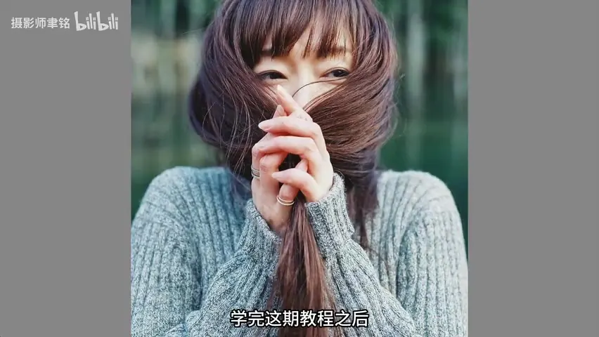 参考截图 01｜00:14 | 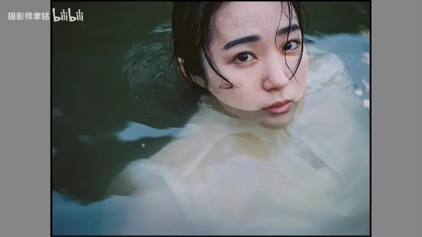 参考截图 02｜00:32 |
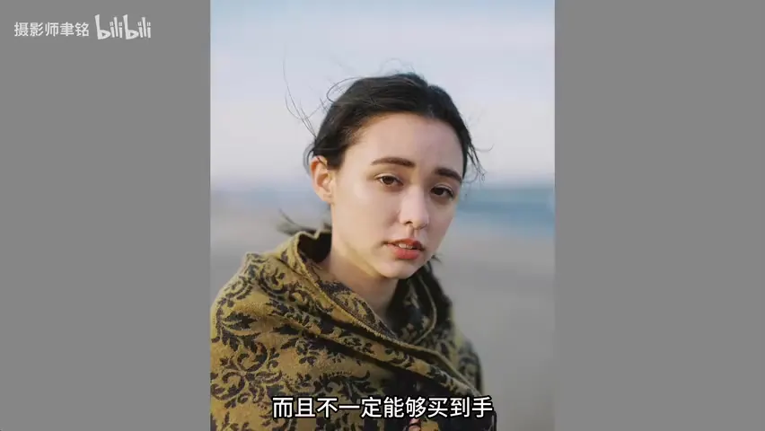 参考截图 03｜00:50 | 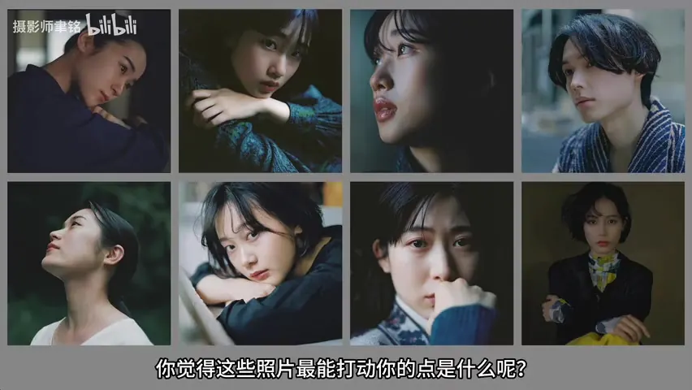 参考截图 04｜01:09 |
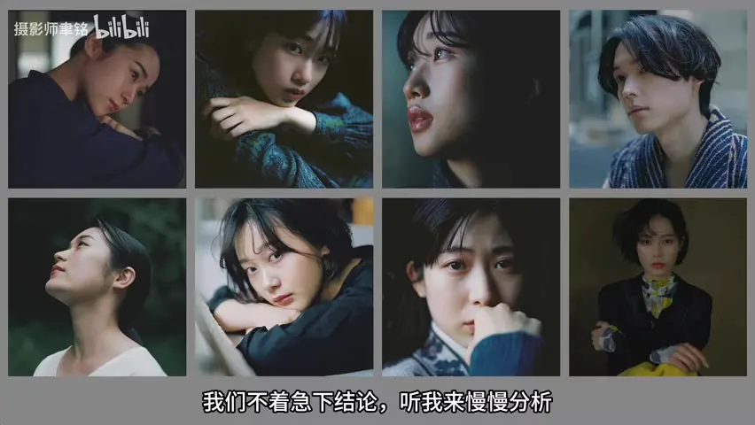 参考截图 05｜01:27 | 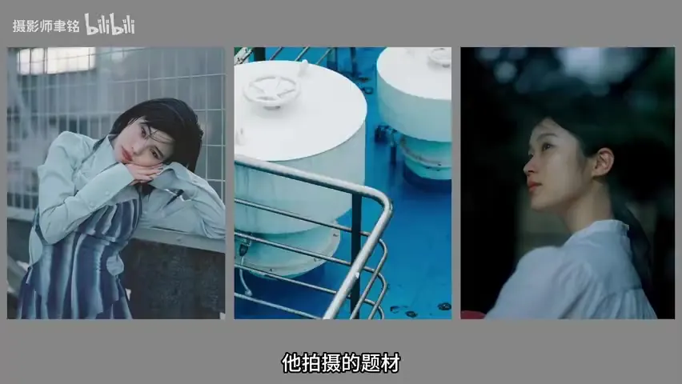 参考截图 06｜01:46 |
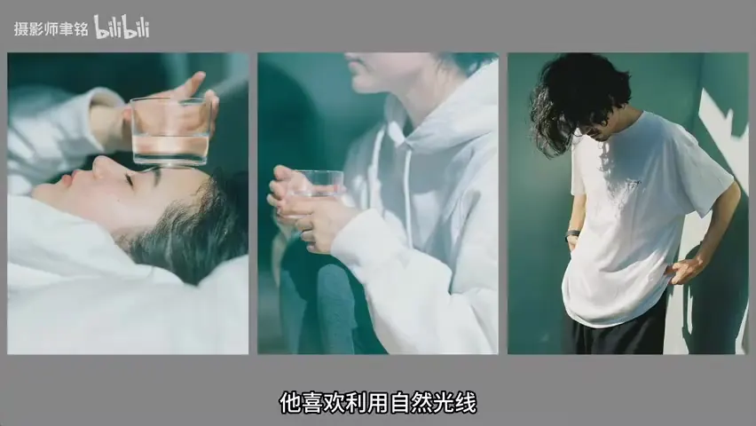 参考截图 07｜02:04 | 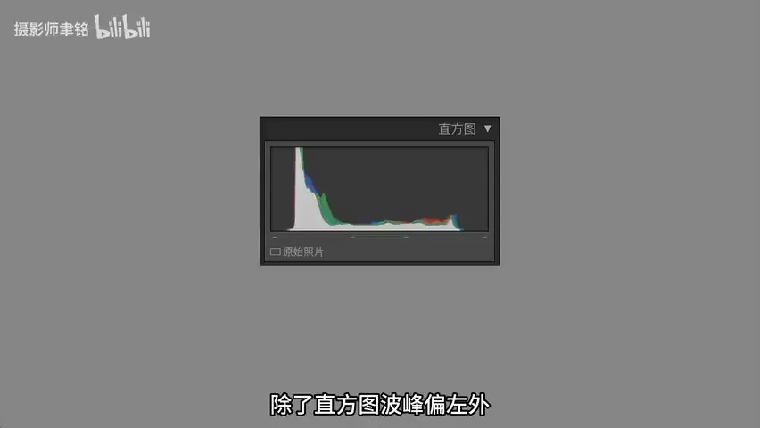 参考截图 08｜02:22 |
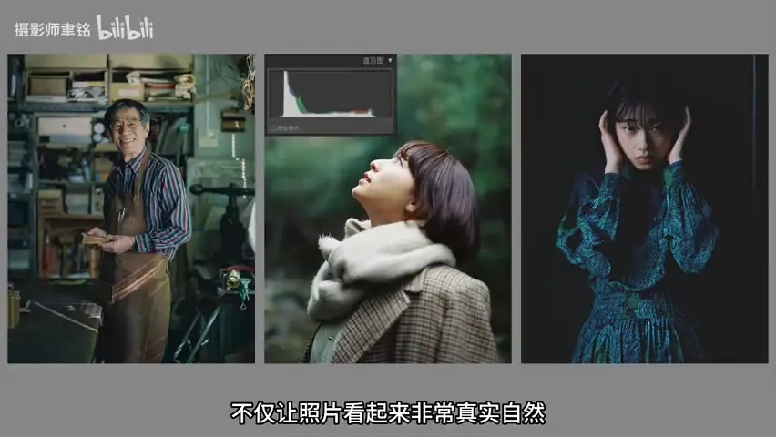 参考截图 09｜02:41 |
参考截图 10｜02:59 |
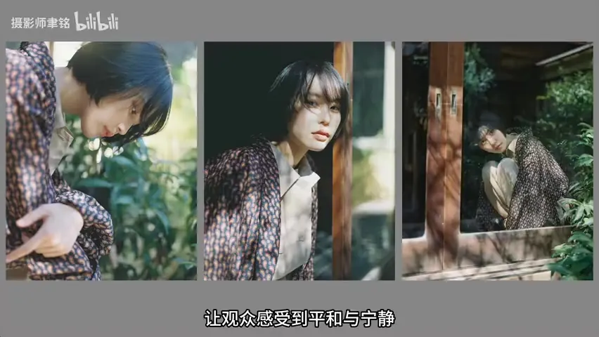 参考截图 11｜03:18 | 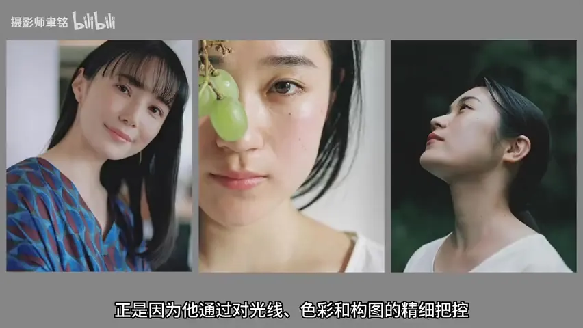 参考截图 12｜03:36 |
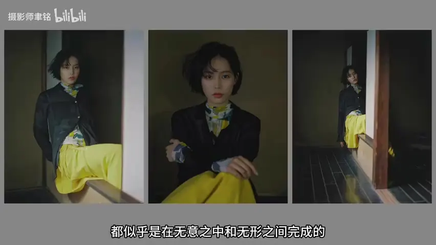 参考截图 13｜03:54 | 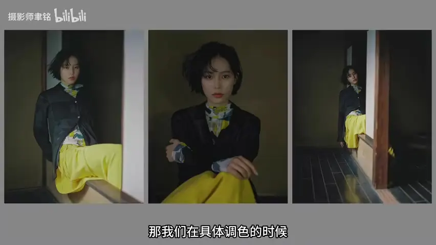 参考截图 14｜04:13 |
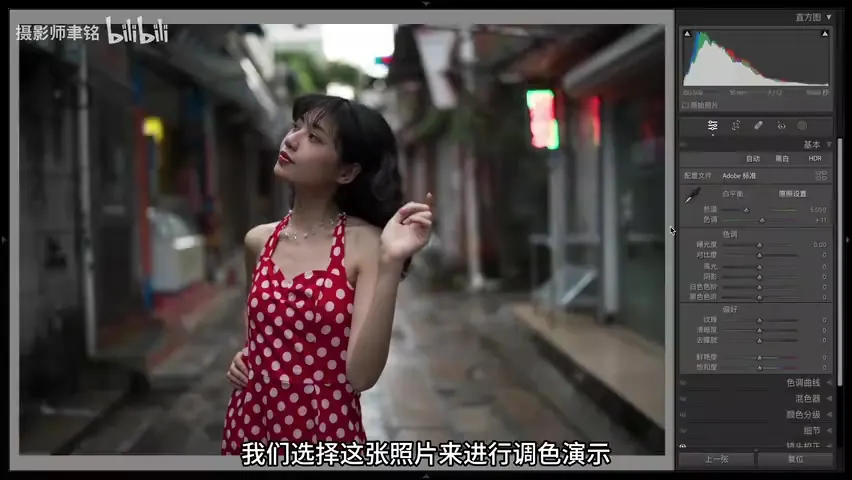 参考截图 15｜04:31 | 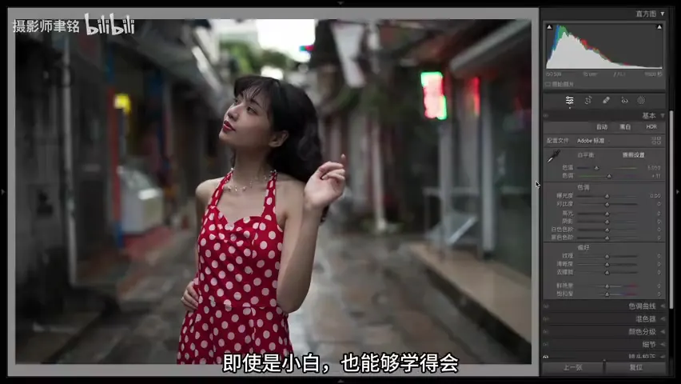 参考截图 16｜04:50 |
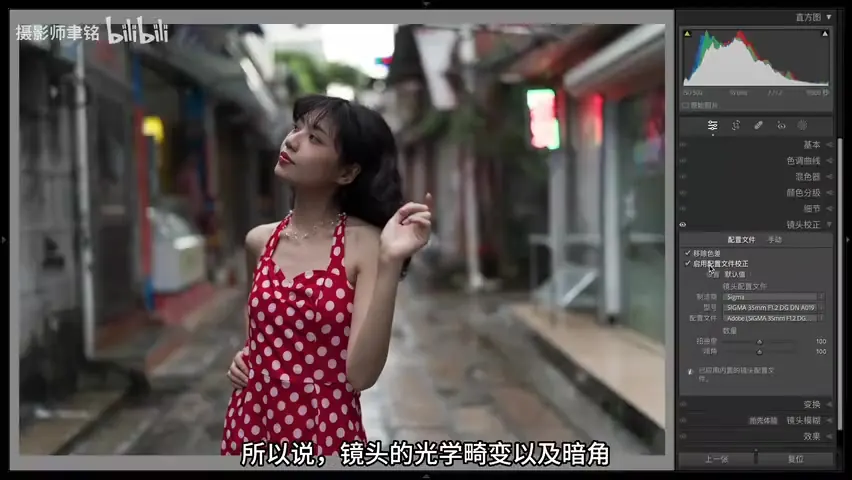 参考截图 17｜05:08 | 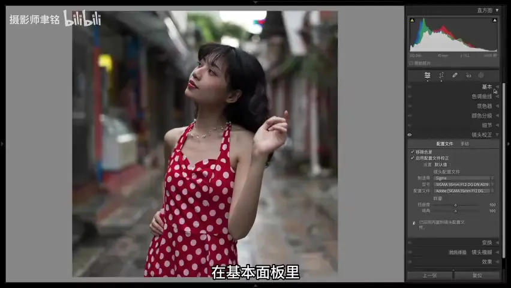 参考截图 18｜05:26 |
一页速览
风格目标 | 围绕“大林直行静谧胶片风”建立一套可复盘的观察和调色流程。 |
观察顺序 | 先看参考图与素材是否匹配，再看直方图和明暗关系，最后拆肤色、环境色、冷暖关系。 |
操作顺序 | 基础面板定亮度与反差，曲线塑造影调，HSL/混色器处理主色，颜色分级/校准统一氛围，局部工具收尾。 |
学习重点 | 不要只记参数；每一步都要对应画面问题，例如偏黄、过曝、肤色脏、暗部死黑、背景颜色杂乱等。 |
学习目标
能从参考截图中判断目标风格的题材、光线、影调和主色倾向。
能把视频里的滑块操作翻译成“解决什么画面问题”的思路。
能用基础面板、曲线、HSL、校准、颜色分级和局部调整完成一轮完整复盘。
能把同一套方法迁移到自己的照片，并根据素材差异微调而不是硬套数值。
能用前后对比、直方图和参考图同屏检查最终结果是否接近目标风格。
视频要点提炼
时间 | 类型 | 内容摘记 |
02:56 | 关键讲解 | 低饱和偏自然的一个色调 |
05:31 | 关键讲解 | 我们来稍微增加一点点曝光度 |
05:35 | 关键讲解 | 对比度适当降低一些 |
05:37 | 关键讲解 | 那么降低对比 |
05:45 | 关键讲解 | 我们可以把高光再压低一些 |
05:48 | 关键讲解 | 阴影适当的来体量 |
05:51 | 关键讲解 | 白色色节和黑色色节 |
05:54 | 关键讲解 | 也就是说去提亮白色色节 |
05:57 | 关键讲解 | 然后去压暗黑色色节 |
08:05 | 关键讲解 | 而与肤色相关的 |
08:17 | 关键讲解 | 然后饱和度和明亮度 |
09:54 | 关键讲解 | 适当的来提高曝光度和阴影 |
Lightroom 复盘流程
参考图观察先截取作品参考、原图与成片对比，判断画面属于清新、胶片、电影感、夜景、街拍、人像或风光中的哪一种。
基础面板调整曝光、对比、高光、阴影、白色和黑色，让素材进入可调状态；这一步解决明暗和层次，不急着追求最终颜色。
曲线塑形用曲线控制黑白端、中间调和整体反差；胶片感通常会抬黑或压白，电影感常强调暗部和高光的关系。
颜色控制用 HSL/混色器拆解肤色、天空、绿植、衣服和背景；重点只动影响画面的主色，不把所有颜色都调一遍。
统一氛围用校准、颜色分级、色温色调和少量局部工具统一冷暖关系，让画面不散、不脏、不互相打架。
局部收尾：处理脸部、天空、窗口、高光边缘、暗部噪点和主体突出度，最后和参考图同屏复查。
关键截图与讲解
图 01 | 00:41 | 关键画面
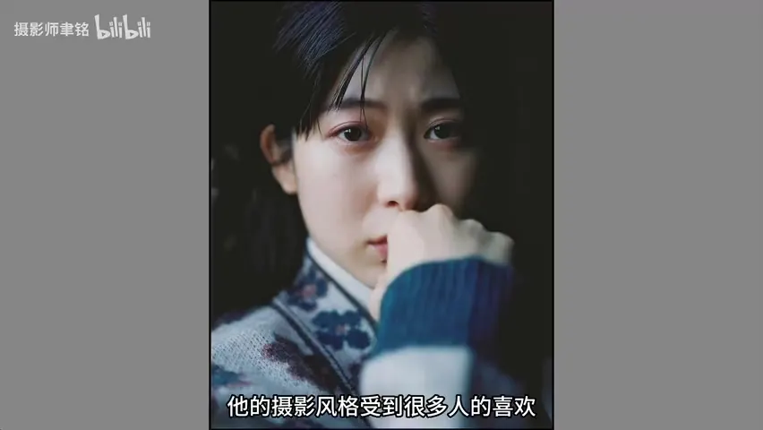
学习要点懂思路的调色才有灵魂
图 02 | 01:09 | 关键画面
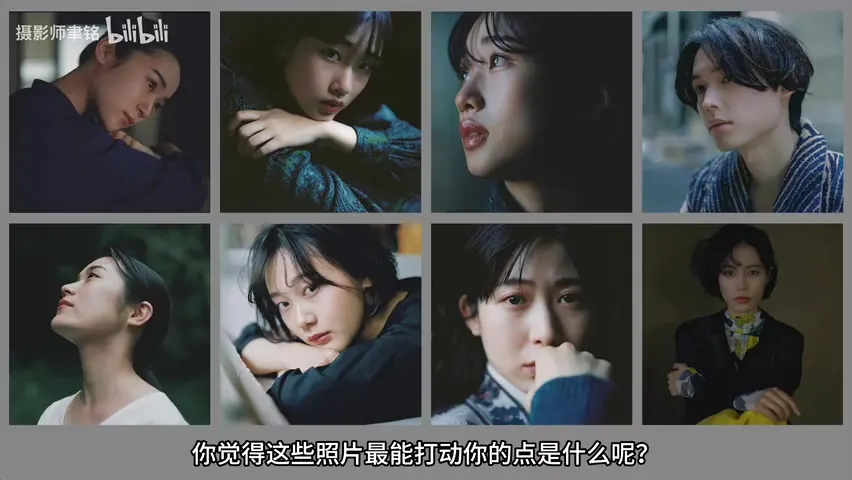
学习要点懂思路的调色才有灵魂
图 03 | 01:37 | 关键画面
学习要点懂思路的调色才有灵魂
图 04 | 02:05 | 关键画面
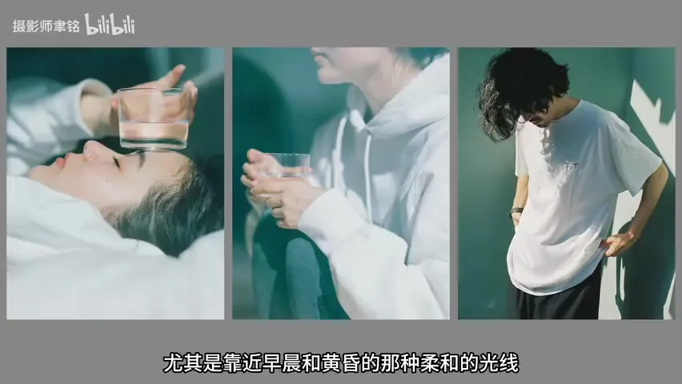
学习要点懂思路的调色才有灵魂
图 05 | 02:33 | 关键画面
学习要点懂思路的调色才有灵魂
图 06 | 03:02 | 关键画面
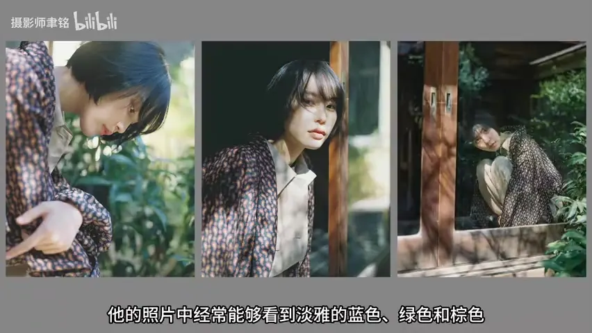
学习要点懂思路的调色才有灵魂
图 07 | 03:30 | 关键画面
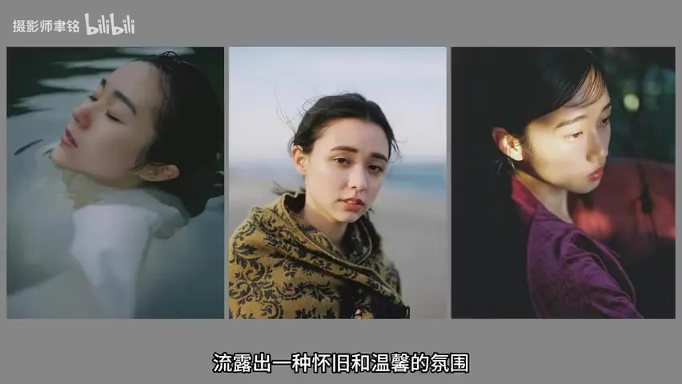
学习要点懂思路的调色才有灵魂
图 08 | 03:58 | 关键画面
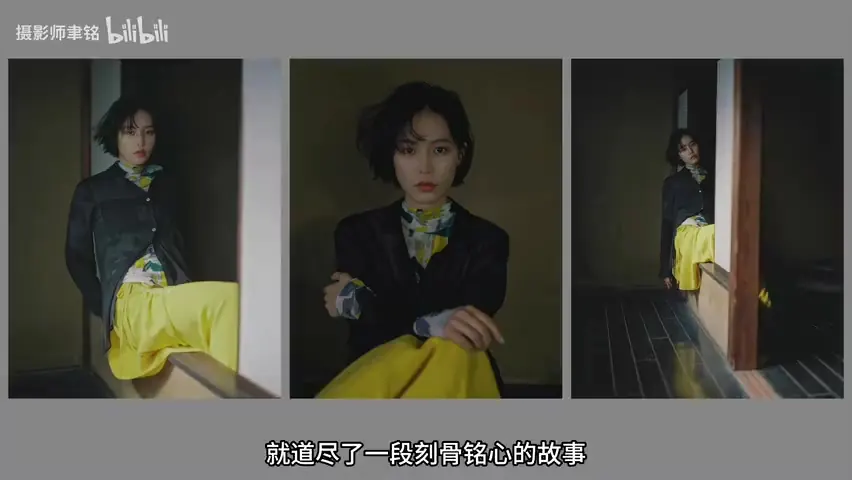
学习要点懂思路的调色才有灵魂
图 09 | 04:26 | 关键画面
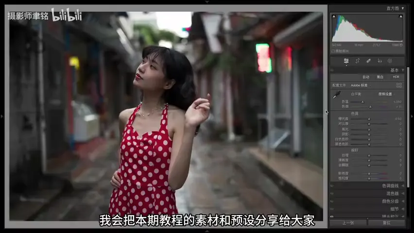
学习要点懂思路的调色才有灵魂
图 10 | 04:54 | 关键画面
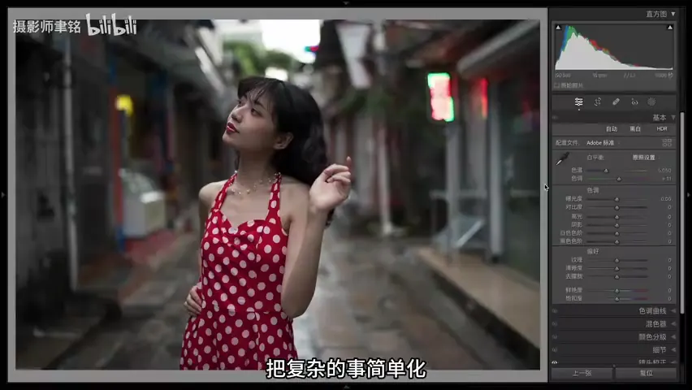
学习要点懂思路的调色才有灵魂
图 11 | 05:23 | 关键画面
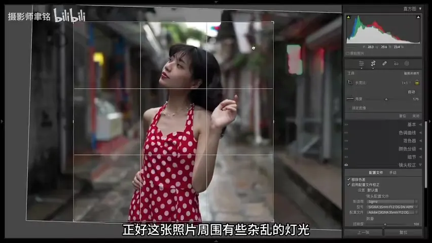
学习要点懂思路的调色才有灵魂
图 12 | 05:51 | 关键画面
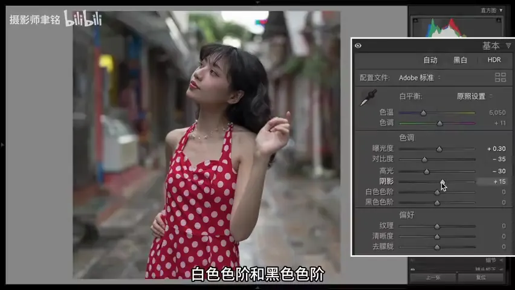
学习要点懂思路的调色才有灵魂
图 13 | 06:19 | 关键画面
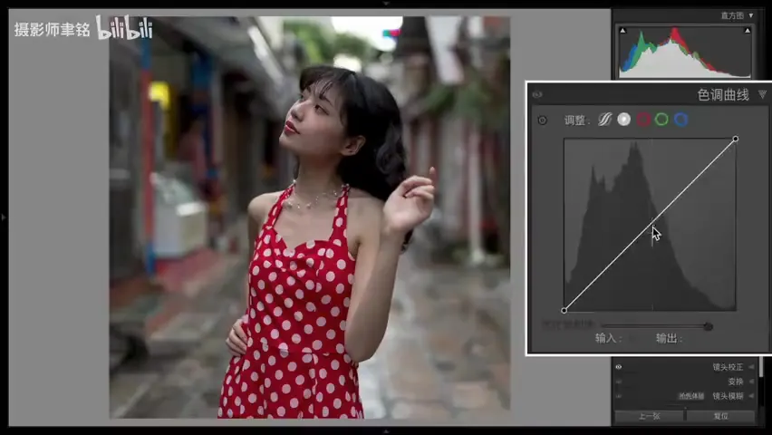
学习要点懂思路的调色才有灵魂
图 14 | 06:47 | 关键画面
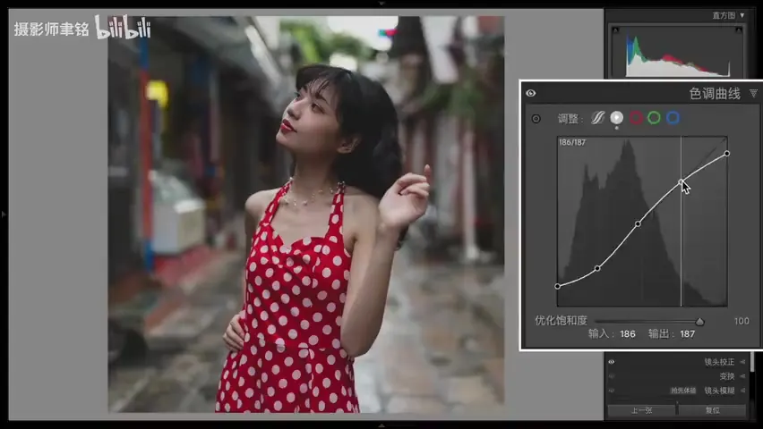
学习要点懂思路的调色才有灵魂
图 15 | 07:15 | 关键画面
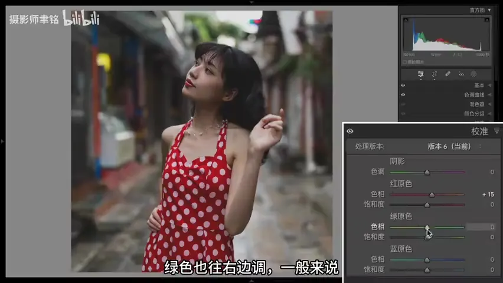
学习要点懂思路的调色才有灵魂
图 16 | 07:43 | 关键画面
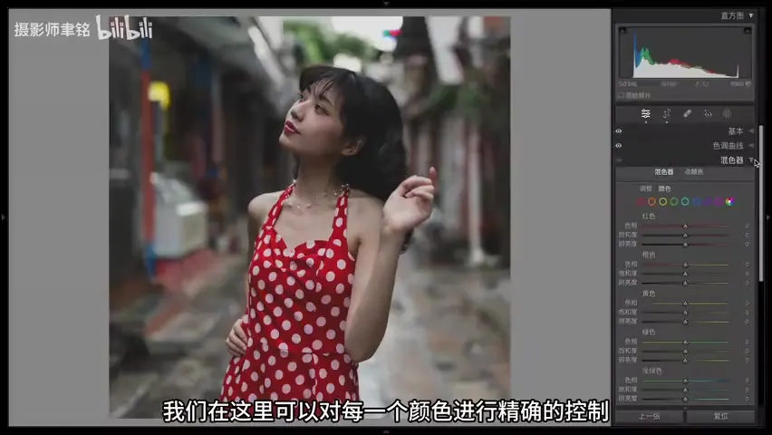
学习要点懂思路的调色才有灵魂
图 17 | 08:12 | 关键画面
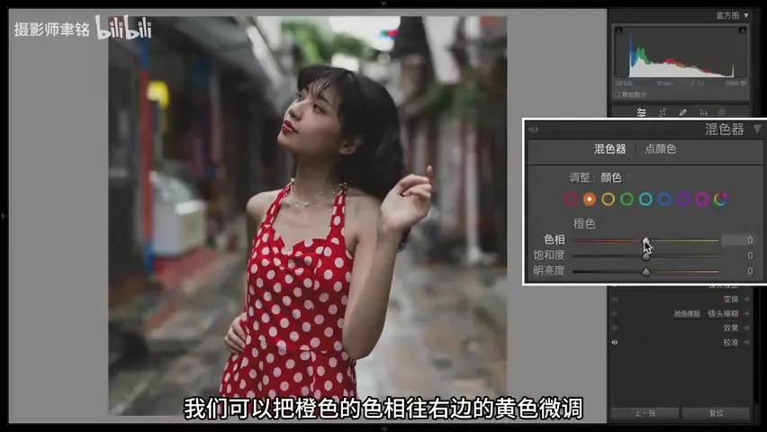
学习要点懂思路的调色才有灵魂
图 18 | 08:40 | 关键画面
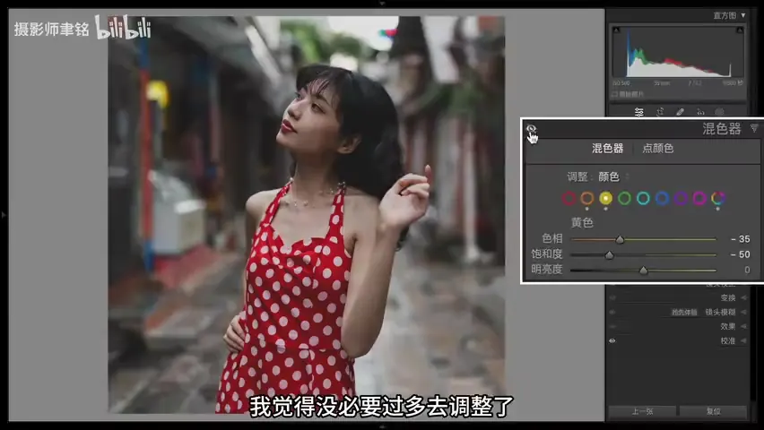
学习要点懂思路的调色才有灵魂
图 19 | 09:08 | 关键画面
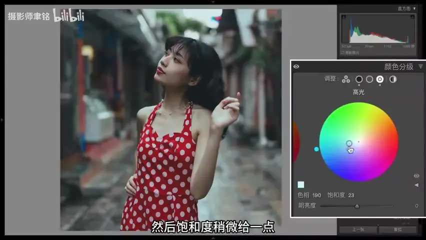
学习要点懂思路的调色才有灵魂
图 20 | 09:36 | 关键画面
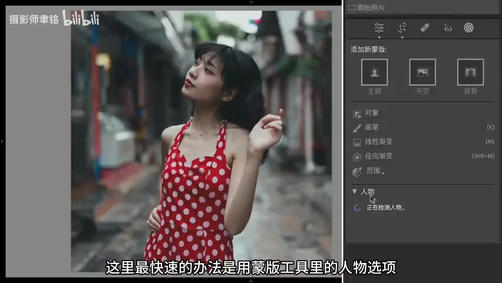
学习要点懂思路的调色才有灵魂
图 21 | 10:04 | 关键画面
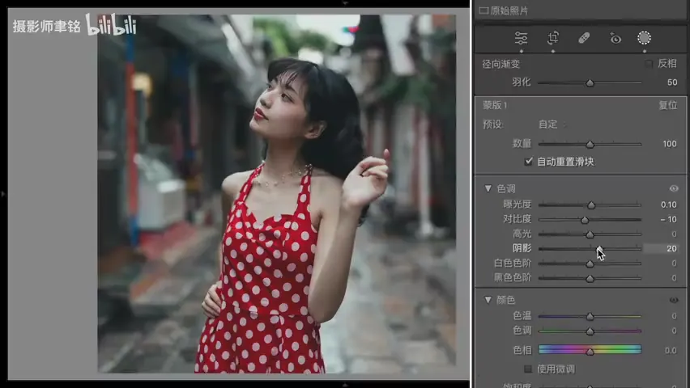
学习要点懂思路的调色才有灵魂
图 22 | 10:32 | 关键画面
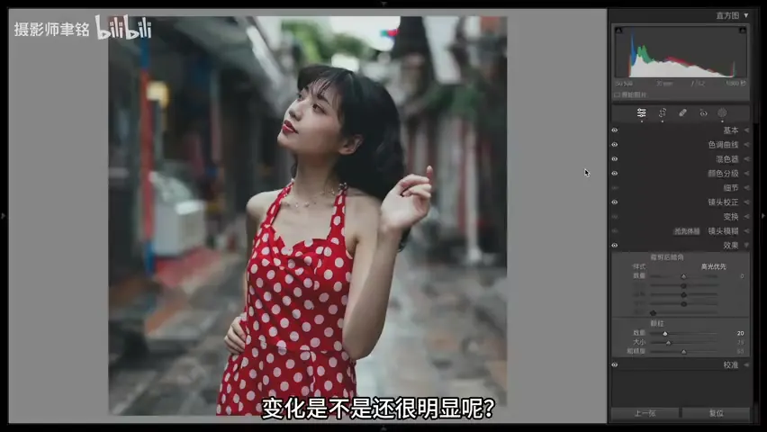
学习要点懂思路的调色才有灵魂
练习任务
找一张和《追色手记29》题材接近的照片，先写下目标风格的三个关键词。
截取 3-5 张参考图，同屏观察肤色、暗部、高光和背景色，不先动参数。
只用基础面板完成第一版，确认曝光、高光、阴影和黑白场没有明显问题。
用曲线建立主要影调，再用 HSL/混色器处理最重要的 2-3 个颜色。
完成后把原图、成片、参考图并排检查，记录最有效的三个操作。
复盘清单
检查项 | 通过标准 |
参考匹配 | 题材、光线和拍摄场景与参考风格足够接近。 |
影调 | 暗部、高光、中间调关系明确，不是单纯拉亮或压暗。 |
肤色 | 肤色符合风格方向，同时不发脏、不偏灰、不失真。 |
环境色 | 背景颜色统一，主色明确，杂色被压住。 |
质感 | 清晰度、纹理、降噪、颗粒和暗角符合目标气质。 |
迁移 | 换一张同组照片后，只需微调曝光和局部即可成立。 |
时间轴速查
时间 | 模块 | 重点 |
00:00-01:25 | 模块 1 | 懂思路的调色才有灵魂；各位朋友大家好；我是摄影师郁明 |
01:25-02:50 | 模块 2 | 我们不急着下结论；听我来慢慢地分析；应该来说 |
02:50-04:15 | 模块 3 | 强烈的静秘之美的一个重要的原因；在颜色的处理上；大林之行它倾向于使用 |
04:15-05:40 | 模块 4 | 如果大家对这部分思路没有问题了；请再给我一个OK；接下来我们就进入到LiteRoom中 |
05:40-07:05 | 模块 5 | 而且它光影变得不是那么的硬；背后这边的天空好像有点偏亮了；我们可以把高光再压低一些 |
07:05-08:30 | 模块 6 | 我们把红色的色相往右边调一些；让人物的皮肤稍微偏黄一点点；稍微偏黄一点点 |
08:30-09:55 | 模块 7 | 然后饱和度降下来；其他的颜色；我觉得没有必要做过多的调整了 |
09:55-11:20 | 模块 8 | 让皮肤变得更亮白一些；对比度可以降低一些；这有利于让面部的光线变得更加的柔和 |
全部图片
本页共保留 40 张来自 Word 的图片。上方正文中已按文档顺序展示，这里作为总览索引。